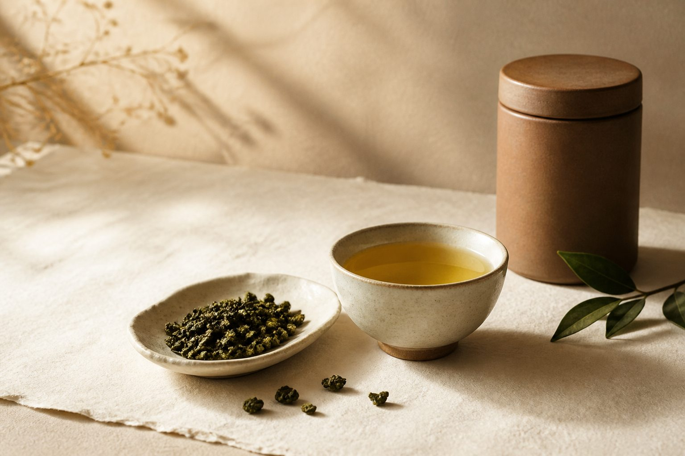
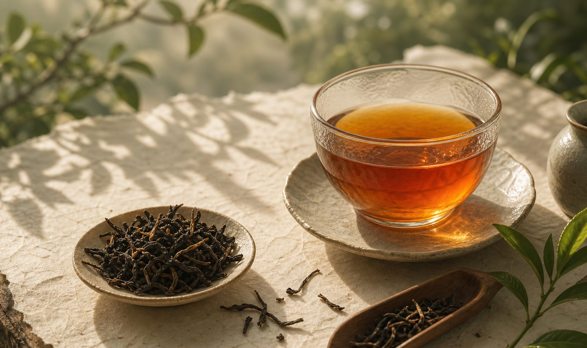
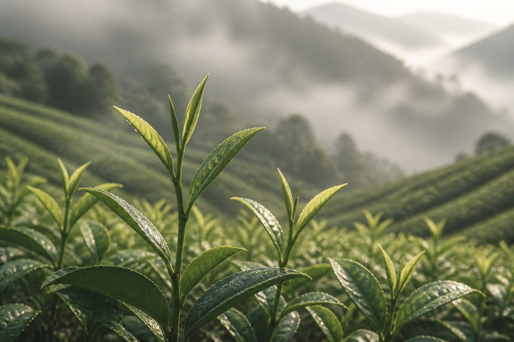

自用、送禮、公司伴手禮或長輩茶，我們會依需求推薦茶款。
可詢問凍頂烏龍、梨山、大禹嶺、杉林溪、龍鳳峽、三棧坪、蜜香紅茶等現貨與季節茶。
茶葉袋適合自用，茶罐紙盒適合送禮；兩斤享宅配免運。
茶葉不是每款每天都有同樣批次。詢問時可以直接問「今天有什麼適合自用或送禮」，我們會依現貨說明。
清香、焙火香、蜜香甜韻或茶湯厚度都可以用白話說，不需要先懂茶名。
自用以茶葉袋分裝最實用；送禮可詢問茶罐紙盒，適合節慶、拜訪與公司伴手禮。
確認茶款與數量後安排宅配。若是送禮或有希望到貨日期，建議先在 LINE 或電話裡說明。

同一款茶也會因春茶、冬茶、焙火程度而不同，訂購前可先詢問目前批次的香氣與茶湯厚度。
自飲、長輩送禮、公司伴手禮適合的茶款不同，可依梨山、大禹嶺、杉林溪等茶款特色來選。

若想冷泡、辦公室泡茶或送禮，可先問這批茶的建議泡法與保存方式，買回家更容易泡得順口。

自飲通常以茶葉袋分裝最實用，開封後也比較容易分批保存，避免一次接觸太多空氣。
若要送長輩、客戶或公司伴手禮，建議先確認茶罐紙盒、份數與是否同批茶款。
節慶或拜訪前訂購，請先告訴我們希望到貨日期，會比較好安排包裝與宅配時間。
電話訂購
0962-015-297（週一至週五 10:00–17:00）
LINE 官方帳號
ID：@a0962015297
加入 LINE 好友
出貨說明
黑貓宅配，訂購茶葉兩斤即免運。
包裝說明
標準茶葉袋分裝（獨立封口真空包裝）。送禮可選茶罐（紙盒款），適合節慶、公司送禮，請於訂購時說明需求。
可以問：「想每天泡，不要太苦，預算想抓實喝一點。」通常會從四季春、杉林溪、三棧坪或清香型茶款開始推薦。
可以問：「要送長輩，希望茶名體面、茶湯穩。」凍頂烏龍、梨山茶、大禹嶺茶通常比較適合這類情境，也可先看 送禮指南。
可以問：「需要幾份茶禮，想看包裝和到貨時間。」我們會先確認數量、茶罐紙盒與收件日期。
可以問：「想冷泡，香一點、入口順。」蜜香紅茶、杉林溪、龍鳳峽或三棧坪都可以依現貨比較。
凍頂烏龍是台灣烏龍茶的代表茶款，產自南投鹿谷鄉凍頂山一帶。茶菁採用青心烏龍品種，經半發酵與焙火製成，茶湯金黃透亮，入口喉韻甘醇，尾韻帶桂花香氣，耐沖泡。春茶香氣飽滿，冬茶湯水細緻甘甜，適合日常自飲，也是過年送禮、長輩伴手禮常見的選擇。
梨山茶香氣清雅，茶湯細緻甘潤，冷後仍有乾淨甜感。適合喜歡清香型高山茶、重視茶湯細膩度的人，也常被用於長輩茶與正式送禮。每季批次不同，建議先用 LINE 詢問現貨與風味。
杉林溪茶區位於南投縣竹山鎮，四周千頃孟宗竹林環繞，全年雲霧不散、雨量充沛、土壤肥沃，是台灣烏龍茶的重要產區之一。杉林溪烏龍香氣輕揚清雅，入口飽滿優雅，茶湯潤喉生津，口齒留香持久。採用輕焙製程，保留完整的山頭氣息與花香，對高山茶初學者來說極為友善，喝起來清新不苦澀，是許多人認識台灣高山茶的第一款入門好茶。
阿里山茶區地處北迴歸線林帶，長年雲霧繚繞，早晨日照充足，午後山嵐飄渺，陽光透過水氣折射成柔和漫射光，讓茶菁自然慢慢熟成。手工採摘一心二葉，製成的高山烏龍色、香、味、甘、醇俱足，茶湯清亮、花香怡人，喉韻順滑甘潤。阿里山高山茶是台灣外銷最具代表性的茶款之一，也是招待貴客、送禮首選的優質台灣好茶。
蜜香紅茶是台灣夏季限定的珍貴茶款。夏季小綠葉蟬叮咬茶菁後，茶葉為自我保護而產生天然蜜香物質，經全發酵製成後，茶湯呈現迷人的橙紅色澤，蜜香濃郁、熟果甜韻明顯，喝起來不苦不澀、老少皆宜，每年限量產製。紅玉紅茶（台茶 18 號）同樣產自南投，具獨特的薄荷與肉桂天然香氣，是南投茶區最具個性的茶款，也是台灣茶走向國際舞台的代表作。
四季春因一年四季皆可採收而得名，香氣高揚，帶有梔子花與玉蘭花的清甜花香，是台灣最具親和力的日常茶款之一。四季春沖泡容易、香氣表現突出，即使水溫、泡法稍有不同，依然好喝不出錯，非常適合剛接觸台灣烏龍茶的朋友作為入門選擇。山嵐茶園嚴選南投產地四季春，每袋茶葉新鮮封裝，讓你在家也能輕鬆泡出一壺茶農等級的好茶。
訂購茶葉兩斤（約 750g × 2）即享黑貓宅配免運費，全台灣本島皆可配送。未達兩斤酌收運費，詳細金額請來電或加 LINE 詢問。
標準以茶葉袋分裝，每袋獨立封口真空包裝，確保茶葉保鮮、不受潮。購買多款茶葉時，每款茶各自分袋裝，清楚標示茶款名稱，方便辨識保存。
可以。山嵐茶園提供兩種包裝選擇：
· 茶葉袋：自用最實惠，保鮮效果佳。
· 茶罐（紙盒款）：質感典雅，適合過年送禮、彌月禮、公司送禮、茶葉伴手禮。
訂購時請在留言欄說明包裝需求，或來電、加 LINE 告知，我們會依您的需求準備。
可以。直接加 LINE 或來電告訴我們你的喝茶習慣（喜歡清香還是有焙火香？平日自飲還是送禮？），我們會根據你的需求推薦適合的茶款。不確定也沒關係，選單裡的「其他／不確定，請推薦」送出後，我們會主動聯繫你。
確認訂購後通常 1–2 個工作天出貨，黑貓宅配一般隔日送達（偏遠地區或假日前後可能稍有延誤）。出貨後我們會通知您取件，如有急需請提前告知，我們會盡量配合。
可以。建議訂購前先用 LINE 或電話確認目前茶款、斤數、包裝方式與希望到貨日期，尤其是節慶送禮或公司伴手禮。
茶葉會因產季、焙火程度與批次不同而有風味差異，先確認現貨與用途，能更準確推薦適合自用或送禮的茶款。